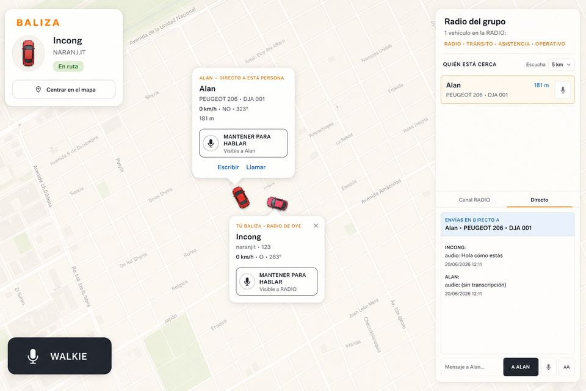
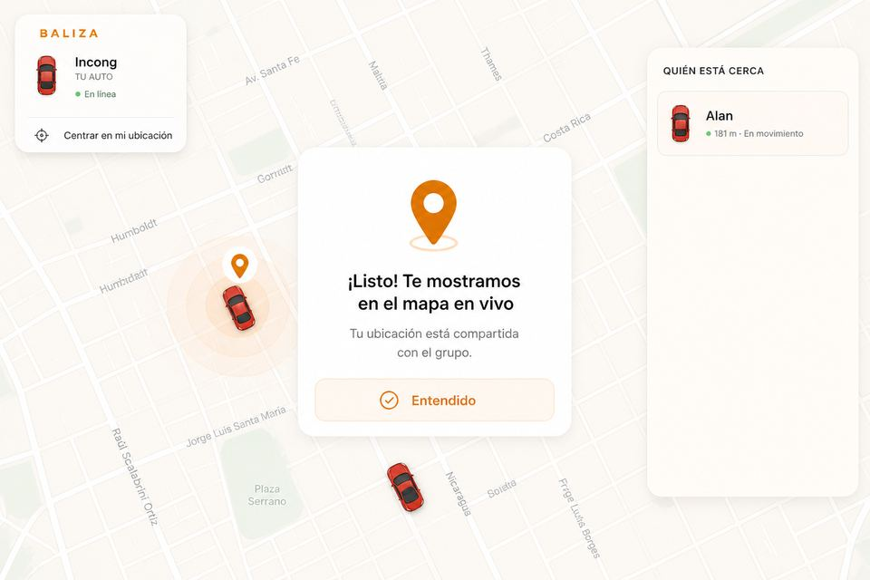
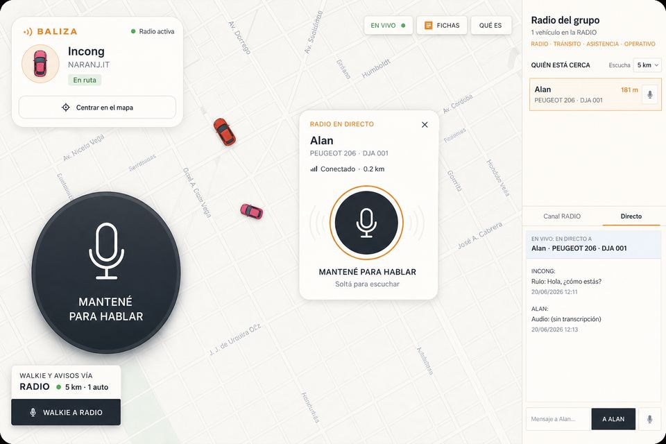

Walkie y mensajes van a
RADIO · 5 km
Elegí tu auto
Tocá una celda de 2 cm. Se guarda en este dispositivo.
RadioMap

RadioMap es la radio de ruta: ves a otros en el mapa, hablás por walkie y, si hace falta, das una mano. En dos toques dejamos listos el GPS y el micrófono, así al entrar no te corta ningún cartel.

Con la ubicación te ponemos en la calle y ves quién está cerca. El navegador pregunta arriba, junto a la dirección (candado o ícono de ubicación), no en un cartel grande en el medio.

El micrófono se usa solo mientras mantenés el botón. El pedido también sale arriba, junto a la dirección. No grabamos nada hasta que vos hablás.
Sin apuro: en un momento dejamos todo listo para el mapa.
Para verte en el mapa, permití el acceso a la ubicación.
Tocá una celda de 2 cm. Se guarda en este dispositivo.